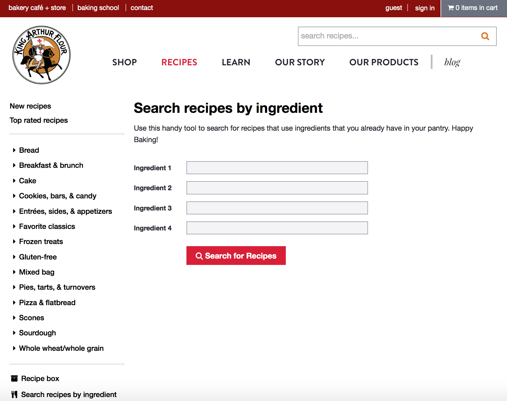
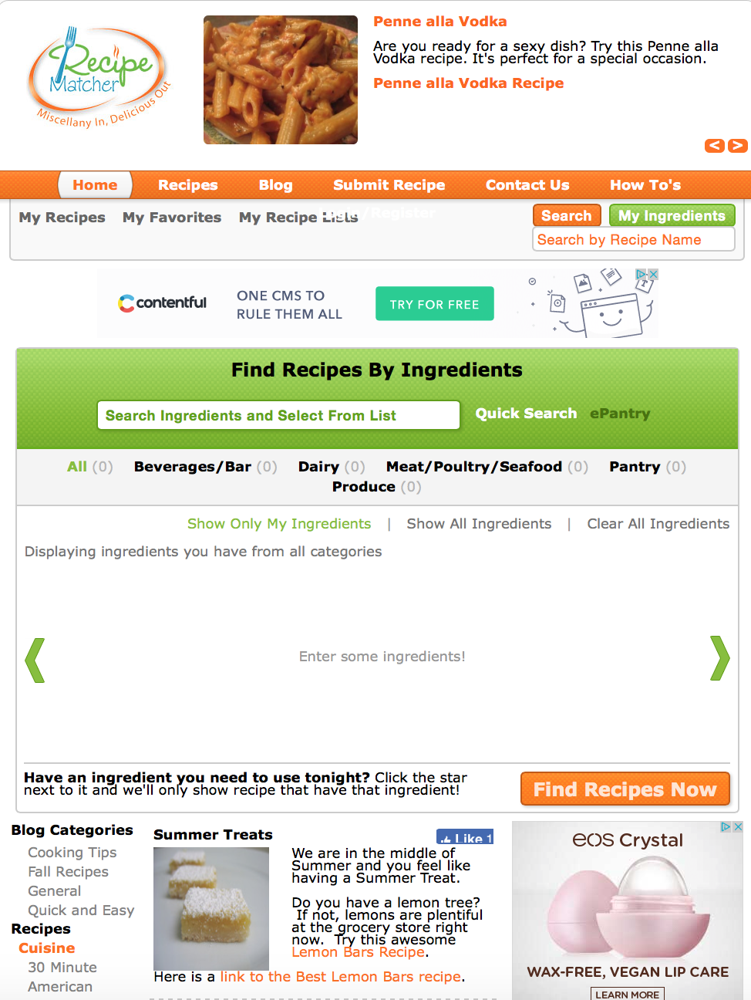

This website relates to my baking app (idea) to a great extent. My idea was to create an app especially for people who saw recipes on YouTube, social media, to help them bake those goods as per the ingredients available in their locality or town. Similarly, the King Arthur website helps one search the ingredients and then buy them according to the recipe one wants to bake. For example, I want to bake a pie, it will show me a list of ingredients needed to make it and then I can choose from those items what I need for my recipe. This website also helps one bake goods according to the ingredients the person has. One can fill in their list of ingredients and it can tell what goods can be baked from the available ingredients. The website also shows a learning tab that tells the user tips and courses for baking. To this concept I would like to add another feature that tells the user what ingredients are available online or in-store in a particular region as this site only offers the users one brand to choose from. Overall the website has good pictures but the whole aesthetic of it could be improved. For instance, the font could be little different as the font chosen looks very common. The colors chosen at the banner could be better, it could be either very professional or casual or both. The banner color seems to be very dull and that makes the website interactive screen look dull too. I like how they have added a personal touch to their website my adding stories about history of King Arthur Flour company, how they support their employees etc. Besides adding their company’s stories, I think in my app I could make this more interesting by adding stories of different people experience with baking. For example, connecting my site to Facebook where people can write their experience, tips, and learning as bakers. Overall the website relates to my concept to an extent, but I still need to add the above details to get my motive solved.
This website doesn’t exactly relate to my idea but focuses on a similar concept. It asks the user to choose ingredients depending on what they have and then accordingly suggests recipes. The idea is similar to mine as both focus on ingredients, but in my app I want the client to first choose the recipe and then substitute ingredients depending on the availability of a particular item in stores or online whereas on this website one decides the items and then chooses the recipes. The target audience in this site is every individual who wants to cook as it shows all recipes for cooking and baking whereas I only want to concentrate on baking recipes. As far as the interactive design goes its very basic, there is nothing immersive or engaging about the site. The color scheme and fonts chosen are also very monotonous. There are many advisements showing on the side of the page which not only distracts the user but spoils the aesthetics of the site too. The UI design of the site is on the lower level as instead of a food image the recipes have a place holder. I could add a lot of aesthetic and content value to the site to attract more users. By changing the color scheme, adding personal stories, removing or blocking advertisements etc. One thing unique about the site, when displaying recipes is that some recipes that belonged to a popular restaurant of a city were linked to yelp to show the popularity of the dish as well as the restaurant. That idea seemed different than other website as one is not only showing the popular restaurant but also the dish of that city. The variety of ingredients and recipes make the website functionally apt; but user interface not being that interactive and pretty lowers the former quality.
